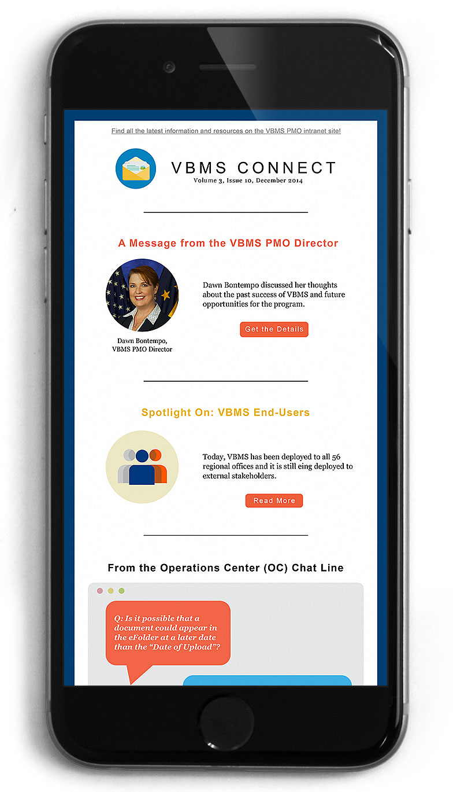

Web
Intranet Redesign
Despite being the main source for the latest resources and information about VBMS for over 29,000 end-users, the VBMS Intranet had about 200 unique visitors each day (about 0.6%). Many issues contributed to the intranet’s low metrics, including the site’s usability, user experience, user interface, and accessibility.
User Experience
I conducted a needs analysis to identify the key elements of user and stakeholder requirements. Analysis revealed that the intranet’s organization of content was not user-centric or friendly, and that users were primarily accessing the resources page.
After analyzing metrics and user feedback, I proposed a user-focused redesign, reorganizing pages and resources so that resources were sorted by relevance to the users. This greatly improved intranet analytics, allowing us to track which specific users and stakeholders were accessing specific resources. These new analytics would then allow the program to improve their training resources.
Proposed Changes & Benefits
- Improved UX, reducing the number of pages from 24 to 17
- A modern UI that would reflect VBMS's branding as a cutting-edge technology system
- An improved workflow that would reduce the level of effort to manage the intranet long-term
- Increased resource use, helping users understand VBMS, and ultimately improving the quality and speed of Veteran's claims processing
Early Results
As I began implementing phases of the redesign, page views increased by 135% and the Undersecretary of Benefits praised the newly redesigned video page.
Analyzing the metrics, I immediately realized that VBMS’s monthly PDF six to eight page newsletter was reaching only .02% of VBMS's users.
To improve user experience, I proposed transitioning to an email newsletter format. With improved graphics and catchy snippets for each article, the email newsletter would be much more inviting to users. Not only would there be an increase viewing, the email newsletter would allow further tracking of which articles were being read.
